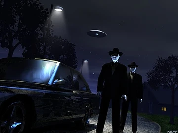

|
Вежливые люди  Некоторые письма приходят не сразу после «видимого» события, а после чего-то менее очевидного — головных болей, раздражения, или ощущения, будто в воздухе дрожит что-то, чего не видно. Три человека из разных штатов писали о визите одинаковых незнакомцев, когда эти симптомы становились невыносимыми. Во всех случаях — двое мужчин, иногда трое, одинаково одетые, чересчур вежливые, чересчур спокойные. Индиана Письмо получено 3 ноября, 06:02 AM. “Неделю болела голова, особенно по утрам. Радио на кухне ловило только шипение, и от него становилось хуже. Вечером в дверь постучали. Лас-Вегас Письмо от ночного охранника мотеля Desert Rest. Получено 9 августа 1997, 01:47 AM. “В последние дни у всех на работе болела голова. Один парень даже сказал, что видит искры, когда моргает. Орегон Письмо от L.M., школьной учительницы. Письмо получил ещё весной 1994, когда работал в одной газете. “Две недели назад половина коллег жаловалась на раздражительность и звон в ушах. Мы подумали, что из-за отопления. Наблюдение Все три письма пришли из разных штатов и не содержат ничего, что указывало бы на сговор. Но совпадения слишком точные, чтобы их игнорировать. — Симптоматика. Во всех письмах упоминаются головная боль, звон в ушах, раздражительность и ощущение лёгкого давления в висках. Это не редкость при магнитных возмущениях, но обычно они не ограничиваются одним районом и не приходятся на одинаковые дни. Я проверил медицинские сводки местных клиник — в период между 1 и 18 ноября 1998 года в нескольких округах действительно наблюдался всплеск обращений с жалобами на мигрень. Официальная причина — смена атмосферного фронта. Однако координаты совпадают с участками, где уже фиксировались радиопомехи в диапазоне 3–4 МГц — тем же, что использовался в военных проектах наподобие HAARP. — Поведение визитёров. Они всегда появляются спустя сутки-двое после того, как люди начинают жаловаться на недомогание. Не интересуются конкретными локациями или погодой, а расспрашивают о личных ощущениях — “звон”, “давление”, “напряжение”. Создаётся впечатление, что они собирают данные не об атмосфере, а о реакции человеческого организма. — Автомобили. Во всех описаниях фигурируют машины конца пятидесятых годов, в безупречном состоянии, с полированным хромом и гладкой поверхностью. В каталоге винтажных авто указано, что такие кузова легко искажают магнитные поля — металлический слой слишком плотный. Если кто-то хотел экранировать себя от определённых частот, старые модели подходили бы идеально. Я просмотрел архивы и нашёл упоминания о подобных случаях в 1965 и 1974 годах. Тогда эти визиты связывали с исследовательскими программами контроля поведения — считалось, что определённые волны вызывают беспокойство и вспышки гнева у групп людей. Теперь же симптомы мягче — раздражительность, головная боль, тревожный сон. И после них появляются эти люди — корректные, приветливые, словно проверяющие, как работает настройка. Может быть, это просто совпадение, а может — следы наблюдений за теми, кто чувствует чуть больше, чем остальные. Если кто-то способен возбуждать эти состояния на расстоянии, логично, что у программы есть те, кто отслеживает последствия. Комментарий R.F.: Где-то между медициной и электромагнитным фоном существует узкий коридор, по которому можно ходить, не касаясь ни одной из сторон. Похоже, именно по нему они и идут. Архив: R.F. — Truth Archives Связь: theyalreadyhere@outlook.com ⟵ назад к статьям |